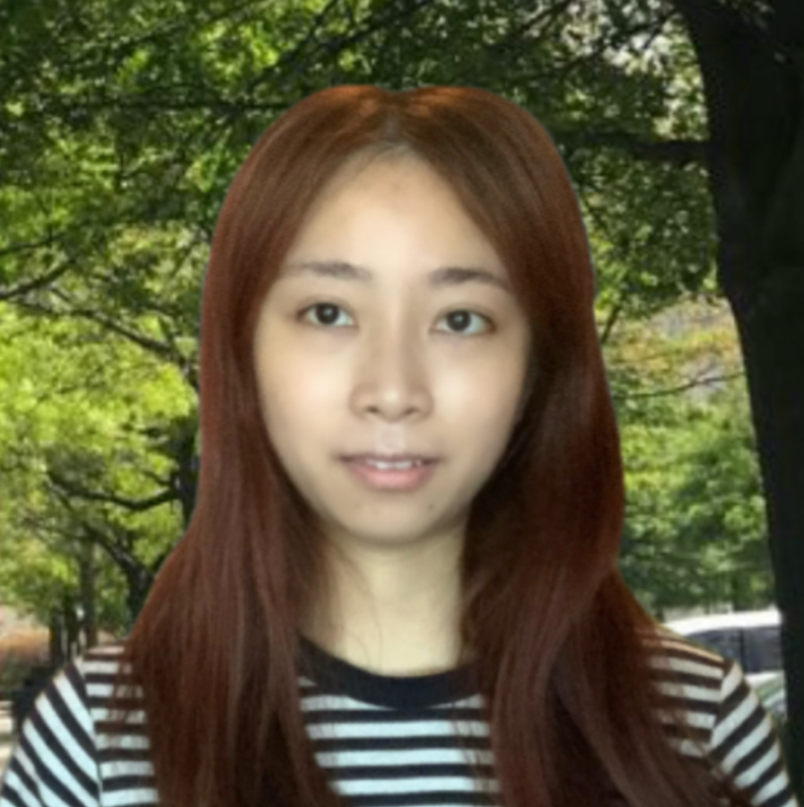

I am a Ph.D. Candidate in Computer Science at the University of South Carolina-Columbia, working on Crystal Structure Prediction and Deep Learning-Based Generative Materials Design. My research combines artificial intelligence with computational materials science to advance methods for materials discovery.
I specialize in developing machine learning and deep learning techniques for crystal structure prediction and generative materials design. My work contributes to computational methods that enable the design of new materials with desired properties. I am scheduled to defend my dissertation proposal in November 2025 and expect to complete my Ph.D. by May 2026.